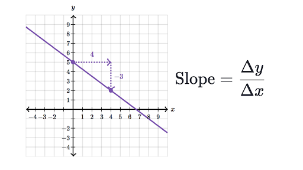

The slope of a line measures a lines steepness. We usually think of slope as the rise over run. You can calculate the slope of a line if you know the coordinates of any two points on the line. Please use the slope calculator below and also learn more about slope here.

The slope of the line is: -----